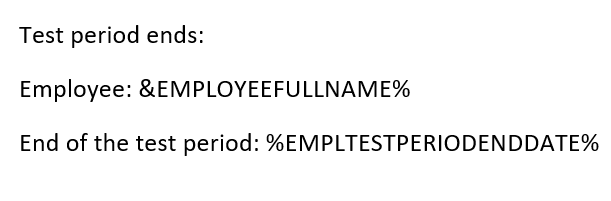

Ziņojumu veidošana
Sistēmā ir iespējams automātiski sagatavot un informēt darbiniekus par uzņēmumā svarīgiem notikumiem, kā arī papildus iespējams pārskatīt nosūtīto ziņojumu vēsturi.
Visi ziņojumi, kā arī to uzstādījumi pieejami atverot sarakstu Ziņojumi.
Ziņojumu adresātu grupas
Lai nevajadzētu katru reizi jaunam ziņojumam, kas attiecas tikai uz kādu konkrētu saņēmēju loku, pievienot adresātus pa vienam, ir iespējams izveidot adresātu grupas. Atveriet sarakstu Ziņojumu adresātu grupas. Izveidojiet jaunu rindiņu jaunai grupai un caur pogu Rindas piesaistiet adresātus.
Ziņojumu adresātu grupas rindas satur sekojošus laukus:
- Grupas kods – no adresātu grupas klasifikatora, veido pats lietotājs;
- Tips – adresātu grupa vai darbinieks;
- Kods – adresātu grupas kods vai darbinieka numurs (ja noradām e-pastu, var vienkārši ierakstīt kaut ko);
- E-pasts – aizpildīts tikai gadījumā, ja ziņojums sūtīts cilvēkam, kurš nav uzņēmuma darbinieks.
Adresātu grupas rindā ir iespējams definēt darbinieku vai citu adresātu grupu. Šādā veidā iespējams no mazākām grupām veidot lielākas ziņojumu grupas, kas apvieno dažādus darbiniekus. Adresāta e-pasts tiks paņemts no visiem adresātu grupu hierarhijā esošajiem darbiniekiem.
Ziņojumu notikumu uzstādījumi
Papildus jāaizpilda Ziņojuma notikumu uzstādījumi, kas satur sekojošus laukus:
- Kods – ziņojuma kods;
- Nosaukums;
- Automātiskā procesa tips – jānorāda gadījumā, ja tiek konfigurētas procesa rindas, tas ir automātiskā nosūtīšana par definētiem notikumiem ( dzimšanas dienas, pases termiņš u.c.). Ja procesa rindas netiek konfigurētas, nekas nav jāaizpilda.
- Adresātu grupas kods – no adresātu grupas klasifikatora;
- Sūtīt pašam darbiniekam;
- Sūtīt struktūrvienības vadītājam;
- Pēdējā ziņojuma datums;
- Datuma formula – obligāti jābūt definētai, ja ziņojumam norādīts automātiskā procesa tips;
-
- datuma formula - obligāti jābūt definētai, ja ziņojumam norādīts automātiskā procesa tips;
-
- datuma formula - obligāti jābūt definētai, ja ziņojumam norādīts automātiskā procesa tips;
- Veidnes kods – ziņojuma veidne.
- Nepieciešama apstiprināšana;
- Apstiprināšanas adresātu grupas kods;
- Prombūtnes filtrs – tiek norādīts prombūtnes kods, ja jāziņo tikai par kādu konkrētu prombūtni (sākuma un beigu datumiem).
Ziņojuma veidne
Jāizveido jaunas veidnes kods sarakstā Ziņojumu veidnes. Jāsagatavo MS Word dokuments, kurā sagatavots ziņojuma teksts. Mainīgā teksta vietā ierakstīt mainīgā dokumenta lauka kodu ar procentiem. Piemēram:

Jāpievērš uzmanība, ka locījumi nav pieejami. Dokumentu laiku nosaukumi ir pieejami pie konkrētā ziņojuma veida sarakstā Ziņojumu notikumu uzstādījumi, noklikšķinot uz pogas Dokumentu lauki.
Sagatavotu failu saglabājiet ar paplašinājumu .htm.
SMTP pasta servera uzstādījumi
Lai būtu iespējams sūtīt ziņojumus no sistēmas ir jāaizpilda SMTP pasta uzstādījumi, kas sastāv no sekojošiem laukiem:
- SMTP serveris – e-pasta pārsūtīšanas SMTP servera adrese
- Autentifikācija – autentifikācijas mehānisms (Anonīms – nav nepieciešams lietotāja ID un parole; NTLM – tiks izmantota Windows autentifikācija; Pamata – tiks izmantots formā norādītais lietotājs un parole.)
- Lietotāja ID – pamata autentifikācijas gadījumā;
- Parole - pamata autentifikācijas gadījumā.
Lietotāju uzstādījumi
Lapā Lietotāju uzstādījumi priekš Personāla risinājuma vajadzībām nepieciešams aizpildīt tikai:
- Lietotā ID – sistēmas lietotāja ID;
- Darbinieka Nr. – norāda darbinieka Nr. tam lietotājam, kurš apstiprina ziņojumu nosūtīšanu.
Pārējie lauki šim risinājumam nav aktuāli.
Procesa rinda
Procesa rindas ieraksti kartes cilnē Visp. info var redzēt notikuma veidu, kuram var definēt periodiskumu. Lai definētu pašu notikumu, lietotājam ir jābūt MS Business Central programmēšanas zināšanām.
Jāpievērš uzmanība, ka laukiem Apraksts un Parametru virkne jābūt vienādiem.
Cilnē Periodiskums definē ziņojumu sūtīšanas intervālu. Šo lietotājs var definēt pats. Definējot periodiskumu ir jāpievērš uzmanība, lai minūšu skaits no vienas izpildes līdz otrai nav mazāks par vienu reizi, kas nepieciešams ziņojuma apstrādei.
Izsūtīto ziņojumu vēsturi par konkrētiem notikumiem var apskatīties procesa rindas žurnāla ierakstos. Žurnāls satur sekojošus laukus:
- Statuss – kurā notikums atrodas uz pārbaudes brīdi - veiksmīgi, notiek, kļūda;
- Lietotāja ID – kurš ir palaidis šo notikuma procesu;
- Izpildāmais objekta nosaukums;
- Sākuma datums/Laiks;
- Beigu datums/Laiks;
- Kļūdas ziņojums – ja statuss ir kļūda.